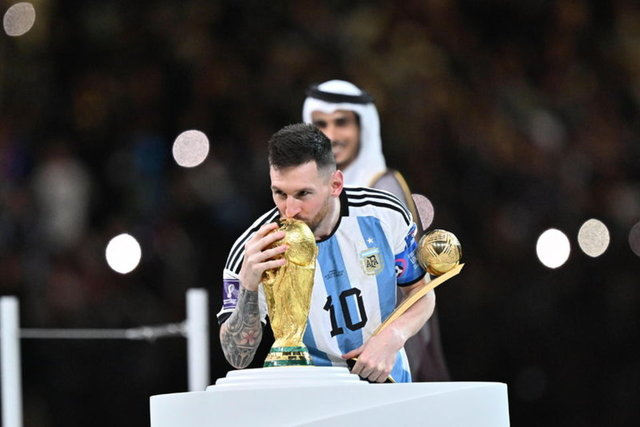
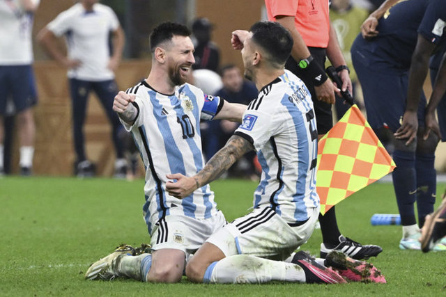
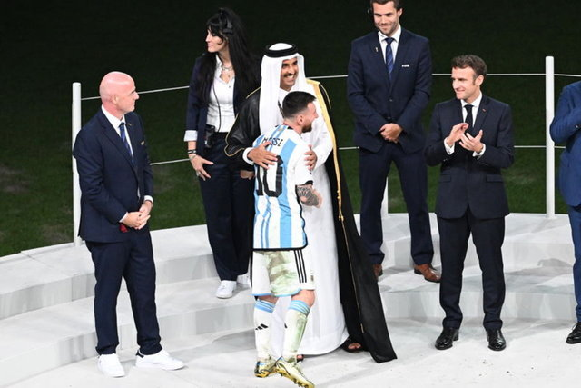
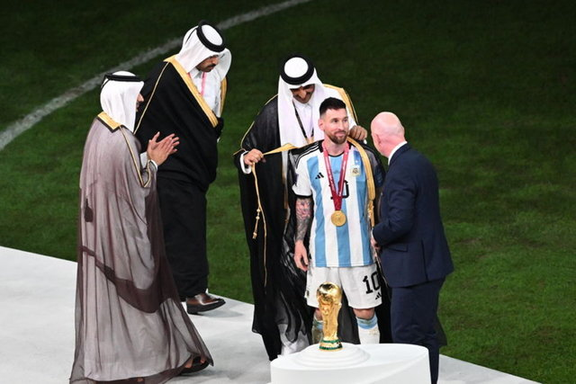
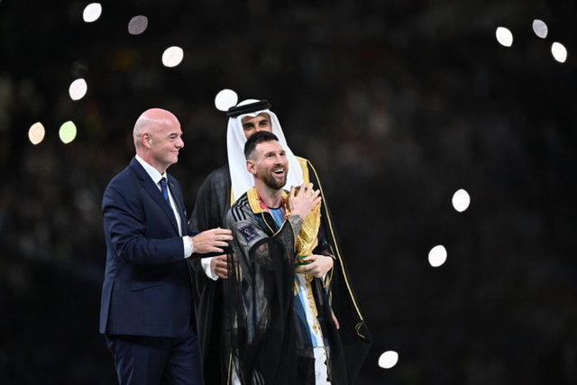
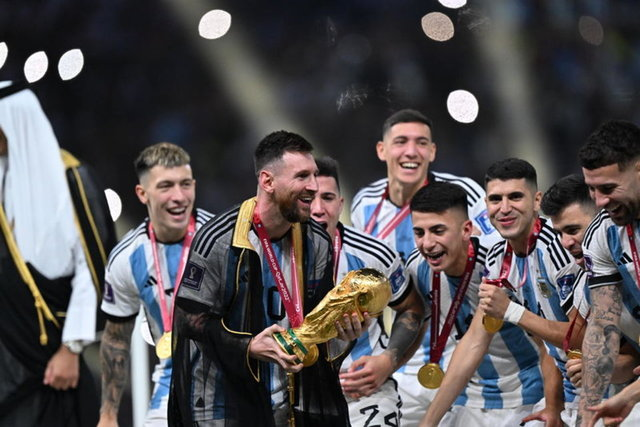

Kupanın Emiri Messi! Arjantin, Dünya Kupası'nı kaldırdı
2022 FIFA Dünya Kupası'nda şampiyonluğa ulaşan Arjantin, düzenlenen törenle kupasını aldı. Arjantin'in kaptanı Lionel Messi'ye yerel Arap kıyafeti giydiren Katar Emiri Şeyh Temim bin Hamed Al Sani ile FIFA Başkanı Gianni Infantino, Dünya Kupası'nı yıldız futbolcuya verdi
2022 FIFA Dünya Kupası'nda normal süresi 2-2, uzatma bölümü 3-3 tamamlanan final maçında Fransa'ya penaltılarda 4-2 üstünlük kuran Arjantin, şampiyon oldu.
Katar'da düzenlenen turnuvanın finalinde Fransa'yı penaltı atışları sonucunda 4-2 mağlup eden "Tangocular" armasına üçüncü Dünya Kupası (1978-1986-2022) yıldızını taktı.
Lusail Stadı'nda oynanan karşılaşmanın ardından saha içinde kurulan platformda ödül töreni gerçekleştirildi. Arjantin'in teknik heyeti ile oyuncularına altın madalyaları takdim edildi.
Arjantin'in kaptanı Lionel Messi'ye yerel Arap kıyafeti giydiren Katar Emiri Şeyh Temim bin Hamed Al Sani ile FIFA Başkanı Gianni Infantino, Dünya Kupası'nı yıldız futbolcuya verdi.
Kupayı alan Messi, tezahüratlar eşliğinde kupayı arkadaşlarının yanına götürdü.

Arjantin takımı, Messi önderliğinde kupayı büyük bir coşkuyla
havaya kaldırdı.
"Tangocular" futbolun milli takımlar
düzeyindeki bir numaralı organizasyonunda 1978 ve 1986'nın
ardından üçüncü kez kupayı müzesine götürmeyi başardı.
Arjantin, Dünya Kupası'nda 36 yıl sonra şampiyonluğa
ulaşmayı başardı.
Turnuvada son şampiyonluğunu Diego Armando
Maradona'nın da yer aldığı kadrosuyla 1986'da elde eden
"Tangocular", 36 yılın ardından kupayı müzesine götürmeyi başardı.
Dünya Kupası tarihinde 20 yıl sonra ilk kez Avrupa kıtası
dışından bir takım şampiyonluğa ulaştı.